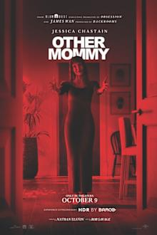

Theaters · Raleigh/Cary · Fri Oct 9 + Sat Oct 10, 2026
Alamo either way: Concrete for you, Heart of the Beast for Bekah.
BLUF: Both picks are at Alamo Raleigh, so book Alamo either way and buy now. The History of Concrete (97% RT) is the better movie for you. Heart of the Beast (94% audience, A- CinemaScore) is the safer bet for Bekah. Watch one episode of How To with John Wilson tonight to decide. No new Wes Anderson.
Thin slate. You've already seen Primetime and Resident Evil. The biggest new openings are a Colleen Hoover adaptation (Verity, 41% RT, C+ CinemaScore) and Other Mommy, which reviewed badly.
Ranked
Heart of the Beast BEKAH'S PICK
1h41m · PG-13 · David Ayer (Fury)
Retired Special Forces vet (Brad Pitt) and his combat dog survive a plane crash in the Alaska bush.
RT 85% / 94% audience · Metacritic 69 · CinemaScore A-
The safe one. Original, not a franchise, and the audience numbers are the best on the slate. It's a sincere survival-and-dog movie with no real directorial voice, so it won't be your favorite, but it's the opposite of Primetime: warm, simple, built for a crowd. Bekah: high odds. Expect to cry about the dog.
The History of Concrete YOUR PICK
1h42m · John Wilson (How To with John Wilson)
Wilson takes a Hallmark-movie writing workshop and tries to use it to pitch a documentary about concrete.
RT 97% / 75% audience · Metacritic 81 · Letterboxd 4.0
Best movie playing for your taste. It's John Wilson's first feature, from the HBO show How To with John Wilson (2020 to 2023, on Max). Deadpan, weird, funny, and warmer than Primetime. Only at Alamo Raleigh. Bekah: test her with one episode first, like How To Put Up Scaffolding.
Digger WILDCARD
2h9m · R · Alejandro G. Iñárritu
Tom Cruise in prosthetics as an oil tycoon trying to undo a global catastrophe he caused.
RT 52% / 71% audience · CinemaScore C+ · opened $8M on a reported $130M+ budget
Original auteur satire, on paper right in your lane. Critics split hard, audiences gave it a C+, and there's a 10-minute climate monologue everyone mentions. Bekah: low odds. Primetime already taught that lesson.

Other Mommy
1h33m · R · Rob Savage · Jessica Chastain · prod. James Wan
A monster poses as a little girl's mother. Opens Friday.
Early reviews 1.5 to 2.5 out of 5 · RT score not posted yet
Reviews landed Wednesday and they're bad: predictable jump scares, weak CGI, a finale that got laughs. Chastain is the one thing people praise. Skip.
Already seen: Primetime, Resident Evil, Toy Story 5. Cut: The Social Reckoning (Social Network follow-up, 64% RT, fails the franchise test), Practical Magic 2, Angel and the Badman (remake), Verity (41% RT, C+). Spider-Man: Brand New Day passes the new franchise test on scores (90/97) if you haven't seen it. Re-releases: Pan's Labyrinth 20th anniversary is at Regal if you ever want it.
Showtimes
Evening shows only, closest theater first. Fenton isn't showing Heart of the Beast on Fandango. Times from Atom Tickets and Fandango, pulled Thursday. *AMC Holly Springs is a full dine-in theater, same format as CinéBistro, so it's last resort.
Heart of the Beast
| Theater | Fri 10/9 | Sat 10/10 |
|---|
| Paragon Fenton, Cary | not listed | not listed |
| Regal White Oak, Garner | 7:05 · 9:45 | 7:05 · 9:45 |
| AMC Dine-In Holly Springs* | 7:45 · 10:30 | 7:45 · 10:30 |
| Regal Crossroads, Cary | 5:50 · 8:40 | 5:50 · 8:40 |
| Regal North Hills, Raleigh | 6:45 · 9:20 | 6:45 · 9:20 |
| Alamo Drafthouse Raleigh | 6:15 · 9:15 | 6:00 · 9:00 |
The History of Concrete
| Theater | Fri 10/9 | Sat 10/10 |
|---|
| Alamo Drafthouse Raleigh | 6:00 (4:30 matinee) | 7:00 · 10:00 |
| Everywhere else | not playing | not playing |
Digger
| Theater | Fri 10/9 | Sat 10/10 |
|---|
| Paragon Fenton, Cary | 11:15a only | 11:15a only |
| Regal White Oak, Garner | matinees only | matinees only |
| AMC Dine-In Holly Springs* | 7:00 · 10:15 | 7:00 · 10:15 |
| Regal Crossroads, Cary | 6:40 · 10:00 | 6:40 · 10:00 |
| Regal North Hills, Raleigh | 6:25 · 9:30 | 6:25 · 9:30 |
| Alamo Drafthouse Raleigh | 7:00 · 9:00 | 6:45 · 10:15 |
Regal military discount: box office only, show ID. Doesn't work online. Only matters if you end up at a Regal. Alamo sells out, so buy those tickets early.
Next 2-3 weeks
- Fjord (Cristian Mungiu, Palme d'Or winner, Sebastian Stan, Renate Reinsve). Opens limited Oct 9. Crossroads and North Hills have it listed with no times yet. 2h26m, Metacritic 81.
- You Can See Everything (Nathan Fielder and Lance Oppenheim). Elizabeth Holmes lets a film crew follow her before prison. Oct 16 limited, wider Oct 23. 2h54m. Metacritic 95 on early reviews.
- Whalefall (Brian Duffield). Diver gets swallowed by a sperm whale with an hour of air. Original survival thriller, Oct 16.
- California Schemin' (James McAvoy directing). Two Scottish guys pose as American rappers and get a record deal. True story. Limited now, Metacritic 66. No local times yet.
- A Talent for Murder (Anton Corbijn). Helen Mirren as Patricia Highsmith in a chamber thriller. Oct 23.
- Klara and the Sun (Taika Waititi, Ishiguro adaptation). Oct 23. Adaptation, not a remake.
- The Only Living Pickpocket in New York (Noah Segan, Rian Johnson regular). Oct 23 limited, Oct 30 wide.
- Further out: Martin McDonagh's Wild Horse Nine, Nov 6.
Sources: The Numbers, Rotten Tomatoes, Atom Tickets, Fandango, CinemaScore via Comic Basics, Boston Globe, CinemaBlend, TheWrap. Built Oct 8, 2026.